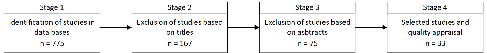

4 Methodology
The construction of a robust meta-framework requires a systematic, step-by-step approach for synthesizing diverse data and existing frameworks into a cohesive and comprehensive higher-order framework. Each methodological step is designed to ensure organized, rigorous analysis and thorough synthesis of qualitative data. This approach ensures that the resulting meta-framework possesses both theoretical robustness and empirical grounding, ultimately enhancing its practical relevance and applicability. This section describes the specific steps that have been used in the construction of the meta-framework.
4.1 Familiarization with Literature
Before beginning the detailed construction of the meta-framework, an exploratory review of existing literature was undertaken. This review encompassed the fields of evolutionary natural sciences, economics, firm dynamics, and various disciplines within the social sciences, including sociology, anthropology, psychology, and political science. The primary goal was to gather diverse interdisciplinary perspectives, identify knowledge gaps, understand the current state of research, and highlight the most relevant theories, models, and frameworks in evolutionary studies. Conducting this familiarization step first ensured that the subsequent meta-framework would be grounded in established knowledge, providing a solid and reliable foundation.
The goal during this phase was to develop a broad understanding of key evolutionary concepts, their applications, and interdisciplinary connections, while appreciating the complexity of the field. Rather than conducting an exhaustive review of all available studies, the focus was on foundational and widely referenced works. These included Charles Darwin’s seminal text “On the Origin of Species” (1964), Richard Dawkins’ “The Selfish Gene” (2016) , Jerry Coyne’s “Why Evolution Is True” (2010), Stephen Jay Gould’s “The Structure of Evolutionary Theory” (2002) , Sean B. Carroll’s “The Making of the Fittest” (2007), and Jared Diamond’s “The Third Chimpanzee: The Evolution and Future of the Human Animal” (2014), to name a few.
This foundation was supplemented with a broad search for related terms in Google Scholar and Google Books, using keywords like “evolution”, “evolutionary”, “thinking”, “thought”, “natural”, “biology”, “science”, “social”, “history”, “economics”, “firm” and “business”. Insights from these initial findings informed the application of a qualitative research method known as “pearl-growing”. This iterative technique expands the search by examining references, citations, and recommendations from the initial sources. In this context, the “pearls” referred to valuable works identified through these referenced materials, enriching the preliminary review.
While not exhaustive, this approach effectively identified preliminary key themes, recurring patterns, and emerging debates within the field of evolutionary studies. It enabled the mapping of the intellectual landscape and was useful to inform the development of the research questions and objectives. Additionally, it provided valuable insights into the diverse perspectives and frameworks that have shaped evolutionary thought over the past two centuries.
4.2 Research Questions and Objectives
The formulation of research questions and objectives builds on the insights gained during the initial familiarization with the literature. This phase is crucial for steering the synthesis process and ensuring the meta-framework’s relevance. By identifying key themes and gaps within the reviewed literature, the familiarization stage provided a solid foundation for developing clear, focused research questions and objectives that address the specific issues highlighted in the review.
The SMART criteria (Specific, Measurable, Achievable, Relevant, and Time-bound) were applied to formulate clear and focused research questions and objectives, ensuring a structured and well-defined roadmap for the meta-framework development process. Additionally, the iterative nature of this process enabled the refinement of research questions and objectives as new insights emerged during the synthesis. This adaptability proved essential, as the discovery of new themes during the meta-framework synthesis often reshaped the initial research focus, ensuring alignment with the evolving understanding of the subject.
4.3 Specifying an A Priori Framework
The next step involved developing an a priori framework to serve as a foundation for the subsequent meta-framework synthesis. This process unfolded in three main stages:
4.3.1 Selection of a Seminal Work
The first stage focused on identifying a seminal work that comprehensively addressed core ideas relevant to evolutionary thinking and aligned with the study’s research questions and objectives. This seminal work was intended to provide a robust theoretical and empirical basis for constructing the a priori framework. The selection criteria included:
Scientific Recognition: The work must be widely acknowledged within the scientific community for its significant contributions to understanding evolutionary thought.
Historical Perspective: The work should offer valuable insights into the historical trajectory of evolutionary thinking, encompassing both mainstream and divergent perspectives.
4.3.2 In-Depth Review and Thematic Categorization
After selecting the seminal work, a detailed review was conducted to extract its core arguments, methodologies, and conclusions. Key dimensions and recurring themes were identified, along with the relationships between these themes. This analysis provided the structural foundation of the a priori framework.
The extracted information was organized into thematic categories, which included:
Core Themes: Central to the study’s focus and directly relevant to the research objectives.
Peripheral Themes: Contextual or supporting insights that added depth to the analysis.
The categorization process ensured alignment with the research objectives while maintaining flexibility to adapt during later stages of synthesis.
4.3.3 Refinement of the A Priori Framework
Once the themes and relationships were categorized, the a priori framework was refined to better align with the specific goals of the research. The resulting framework consisted of:
Themes: Broad, overarching concepts capturing key aspects of evolutionary processes. Each theme encapsulated essential elements of evolutionary theory, highlighting mechanisms governing evolution and adaptive behavior.
Relationships: Connections between themes, illustrating their interdependencies and influences.
Guiding Structure: A logical template to guide data mapping and coding during the meta-synthesis, ensuring consistency with the research objectives.
This preliminary thematic structure served as a foundational guide for organizing, analyzing, and interpreting data from the selected knowledge baseline. It also provided a structured template for mapping and coding new data in subsequent stages of the meta-synthesis. By grounding the a priori framework in well-established knowledge, this approach ensured coherence throughout the research process, ensuring a rigorous yet flexible foundation to accommodate emerging insights.
4.4 Systematic Literature Review
Building on the insights from the literature familiarization phase, the established research questions and objectives, and the a priori framework, a systematic literature review was conducted to uncover new data and frameworks in the field of the evolutionary firm. The goal was to either reinforce or extend the initial a priori framework. The review followed a structured protocol (Petticrew and Roberts 2008), which outlined the methods for locating, managing, assessing, and synthesizing various types of evidence. Serving as a roadmap, the protocol ensured transparency, consistency, and reproducibility, while keeping the review aligned with the research objectives.
4.4.1 Inclusion and exclusion criteria
Clear inclusion and exclusion criteria were established to determine which studies from the literature search were eligible for in-depth review. Studies were considered eligible if they analyzed economic and/or firm behavior through an evolutionary lens. This included both conceptual studies and case studies that applied evolutionary concepts and frameworks to examine firm dynamics. Additionally, studies had to meet a minimum quality threshold to be included.
The review encompassed various types of publications, including journals, conference proceedings, and books from diverse publishers. Both qualitative and quantitative studies were included, provided they were written in English and had no specific date restrictions. This approach ensured a comprehensive examination of relevant literature while maintaining the rigor of the review process.
4.4.2 Sources and search strategy
The search strategy encompassed a broad range of academic sources from reputable data bases, sources, and publishers. To ensure a comprehensive and high-quality review, Web of Science and Scopus were used as the primary electronic reference databases. These searches were further supplemented with Google Scholar to identify additional rigorous and reliable sources. This approach provided access to high-quality, diverse, and relevant literature across various disciplines.
4.4.3 Selection of studies
The selection of studies was carried out in four consecutive stages (see Figure 1). In Stage 1, candidate studies were identified by searching electronic databases using the following search keywords:
“EVOLUTIONARY” AND (“FIRM” OR “ENTERPRISE” OR “BUSINESS” OR “ECONOMICS”)
The search strategy initially yielded 775 results. These were filtered to remove duplicates, errors, and articles with titles or abstracts unrelated to the evolutionary perspective on economics or firms, resulting in 75 unique citations. Additionally, studies such as reviews, news articles, workshops, panels, and editorials were excluded from consideration.

4.4.4 Quality assessment and Data extraction
By the end of Stage 4 in the search process, 33 studies remained, all providing evidence of an evolutionary approach to analyzing the economy or the firm. These studies proceeded to the next stage: a quality assessment aimed at identifying any biases significant enough to render a study unable to meaningfully contribute to the research questions or the overall review. Each study was assessed using seven quality criteria (Table 1), drawn from the framework for evaluating qualitative research developed by the UK’s Government Chief Social Researcher’s Office (Spencer et al. 2004). After this evaluation, all 33 studies met the quality inclusion and quality criteria, allowing data extraction and synthesis to begin.
| Quality Criteria |
|---|
| C1. How reliable and credible are the findings? |
| C2. How robust and defensible is the research design? |
| C3. How well justified is the sample design or selection of cases/documents? |
| C4. How effectively was the data collection process conducted? |
| C5. How clearly is the approach to and formulation of the analysis presented? |
| C6. How well does the study convey the detail, depth, and complexity (i.e., richness) of the data? |
| C7. How clearly are the links between data, interpretation, and conclusions explained? |
4.5 Data Extraction and Thematic Synthesis
The next stage of the research involved a systematic three-step process to organize data and identify and synthesize themes from the selected studies. The initial step involved organizing and storing studies retrieved from online databases in Mendeley Desktop to ensure accurate referencing. These studies were then imported into Atlas.ti (version 24) software for coding and thematic analysis.
Atlas.ti enabled a cyclical and iterative approach to managing and analyzing the substantial volume of data collected from the studies, a process that would have been difficult to replicate using conventional word processing or spreadsheet tools. While the software does not replace the researcher’s essential role in data analysis and interpretation, it significantly enhanced the methodological rigor, efficiency, and the overall quality of the research process. Additionally, the software streamlined data management and coding tasks while offering powerful visual analysis tools. This capability allowed for the identification of patterns, themes, and relationships that might otherwise have been overlooked in a purely text-based review.
After uploading the selected studies into Atlas.ti, the next step involved a thorough reading of each study to identify and select relevant text segments. These segments, referred to as quotations, represented meaningful units of data that were significant, illustrative, or aligned with the research objectives. For example, a quotation might capture an author’s perspective on a specific evolutionary topic or provide an observation directly relevant to the research questions. Each quotation was then carefully reviewed and manually highlighted in Atlas.ti, ensuring precision and relevance to the study’s goals.
After identifying relevant quotations from the reviewed studies, the third step involved three consecutive rounds of coding and synthesis. This iterative process culminated in the identification of final themes and concepts. It is crucial to emphasize that this was not a purely machine-generated process; rather, it was driven by the researcher’s critical interpretation and judgment at every stage.”
During the first round of analysis, thematic coding was used to examine small segments of data in detail and to compare them with one another. This phase followed the predefined themes of the a priori framework but remained open to adaptation. Codes at this stage represented a range of data points, including theoretical concepts, descriptive details, or ideas deemed potentially significant for further exploration. An inductive approach was employed to incorporate data that did not align with the a priori framework, enabling new themes and relationships to emerge organically. Atlas.ti’s ability to link codes directly to quotations provided an invaluable advantage. This feature facilitated continuous, context-based verification of assigned meanings, preventing concepts from becoming detached from their original context in the data.
In the second round, the focus shifted toward consolidating codes into higher-order categories. Similar or overlapping codes were grouped and merged, while redundant or irrelevant codes were systematically eliminated. This iterative refinement process ensured that the emerging thematic structure was coherent and parsimonious.
The third and final round concentrated on selective coding, revisiting the data and codes to uncover overarching themes, key concepts, and their interconnections. Chains of codes and linked quotations were employed to create network diagrams, which visually mapped the relationships within the data. Atlas.ti’s mapping tools were instrumental in retrieving and visualizing co-occurring codes, enhancing the clarity of thematic connections. Additionally, hyperlinked maps of quotations were generated to address the research questions directly and refine the analysis further. These steps collectively ensured a rigorous and comprehensive thematic synthesis.
4.6 Final Meta-Framework Refinement
The synthesis report is then written, starting with an introduction that outlines the research objectives, scope, and methodology. The methodology section describes how Atlas.ti was utilized, detailing coding procedures and analytical strategies. The results section presents the main findings, organized by themes or research questions, while the discussion synthesizes insights, discusses implications, and identifies gaps in the literature. The report concludes with a summary of key contributions and recommendations for future research. Visual aids, such as screenshots of code networks, word clouds, or frequency tables generated by Atlas.ti, are included to enhance the presentation of findings.
After drafting the report, it is important to validate and refine it. The synthesis is reviewed to ensure alignment with research objectives, and the coding and analysis are cross-checked for consistency and reliability. Feedback from peers or collaborators is sought to refine the findings further.
To ensure transparency and reproducibility, an audit trail is maintained throughout the process. This includes documenting decisions made during the review in memos and saving codebooks, network diagrams, and query results as project outputs. Data from Atlas.ti, such as code reports, project summaries, and visualizations, is exported for inclusion in the final report or supplementary materials.
Finally, the synthesis report is finalized and prepared for dissemination. This includes ensuring the report is clear and coherent, with findings presented effectively to stakeholders. By following this systematic approach, researchers can leverage Atlas.ti’s capabilities to produce a high-quality synthesis of the literature.
In the last stage of our meta-framework building process, the focus shifted towards refining the a priori meta-framework and ensuring the robustness of the meta analysis. A thorough review process was conducted to ensure the reliability and relevance of both the coding and the new themes emerging from it. This involved critical examination of the whole work, carefully evaluating each theme to ensure faithful representation of the data within or outside the scope of the a priori meta-framework. As a result, the initial a priori meta-framework was further refined and extended to achieve a more accurate reflection of the extracted data.
Next, the relationships between the new themes and the a priori themes were reexamined to generate meaningful insights into how they interact and influence one another. This interpretation, grounded in both the empirical data and the original a priori meta-framework, led to a revised conceptual meta-framework that provides a coherent and comprehensive explanation of the evolutionary behavior of the firm.
By adhering to these systematic steps, a final meta-framework was formulated, characterized by both rigor and adaptability. The meta-framework offers valuable insights that contribute to our understanding of evolutionary firm behavior. The transparent, comprehensive, and empirically grounded approach employed in its development ensures the meta-framework’s robustness as a tool for advancing both theoretical and practical knowledge in the field of evolutionary firm analysis. Notably, the final meta-framework integrates the a priori themes with those newly identified during the systematic literature reviews. This comprehensive model captures the full spectrum of relevant themes and their interrelationships, providing a nuanced and detailed understanding of the studied concepts, relations, and data.